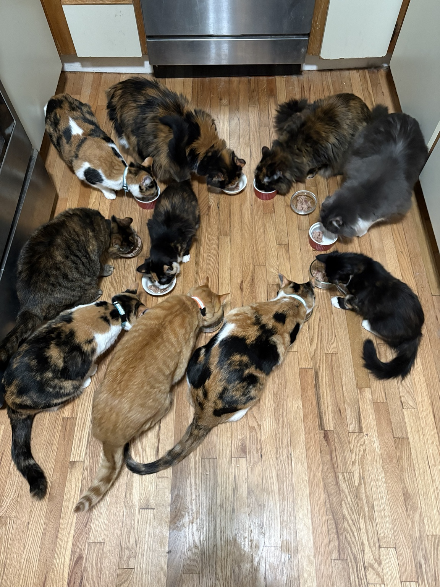

AARON & RACHEL’S TEN FELINE OVERLORDS
The Clowder.
A clowder of ten sassy female cats, including six calicos with a clique of their own. We just live here.

THE FAMILY
Meet the ten.
Select a cat for her biography, weight history, and DNA.
A family album through the years: portraits aren’t necessarily recent. Ages update automatically; weights show each cat’s latest recorded measurement.
WEIGHT HISTORY
Growing up.
Recorded weights, October 2020–October 2026.
Dotted lines mark each cat’s latest recorded weight. Solid curves show GAM smooths. Dashed lines connect the birthday references at 0 lb; these are not measured weights.Download weight data ↓
View the measurements
ANCESTRY
The family DNA.
Explore the reported breed groups
and individual ancestry estimates.
Who has the most? And the least?
Reported ancestry percentages across all ten cats. Ties share the spotlight.
Compare individual breeds
Individual breed estimates
Percentages are reproduced as supplied. Group totals and individual estimates are shown separately, not added together. Minor rounding or source discrepancies are retained.